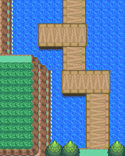

033 阿始的极限秀
一句话目标：配合阿始录制新的“极限秀”节目，前往拍摄场地完成一次录影。
接取地点
- 桔梗市・宝可梦中心内部（室内地图 46:0），阿始（local_id 20，坐标 14,10）。
- 当前目录描述：帮助阿始录制新的极限秀节目。
准备条件
- 前置旗标 4246 已置位（共用接取进度条件；置位剧情由 Main 定位）。
- 还需要旗标 2832 已置位，阿始才会拿出“极限秀”的邀约；该旗标在本包内未见置位脚本，来源未定位。
- 无需携带特定道具或宝可梦。
操作步骤
- 与阿始对话（入口派发
0x08ECC632先判 2833、再判 2832）。当 2832 已置位且尚未接取本任务时，他会提出新的极限秀节目录制并邀你参演（邀约脚本0x08ECFF66；该段正文未在包内提取，原文地址0x08ED1873）。 - 选择配合。脚本
0x08ECFFB6置接取旗标 2833，显示“接受任务:<阿始的极限秀>”，随后他说“好嘞！如果你准备好拍摄了，就告诉哥哥我哦！”。 - 再次与阿始对话，他问“怎么样，准备好前往拍摄场地了吗？”，确认后他说“好嘞，那么我们一起出发吧！”，脚本
0x08ED1E1B将你传送至拍摄地图 52:16。 - 在拍摄地点完成本期录影（该地图在训练师栏关联“359 阿始”，拍摄流程含对战演出，细节未包含在包内）。
- 录影结算由脚本
0x08ED20B2执行：置完成旗标 2834、获得 8 点 BracerPoints，并传送回桔梗市。 - 回到桔梗市宝可梦中心再与阿始对话（脚本
0x08AF04BC）：他说“这次的录制辛苦你了！下次需要拍摄的时候，我会联系你哦！”（置旗标 5968）。
交付检查
- 完成旗标 2834 置位即本期录影结束；完成后再对话只重复收尾对白。
奖励
- 8 点 BracerPoints
容易卡住的位置
- 除前置旗标 4246 外，还需旗标 2832 才会出现邀约；2832 的来源未在本包定位，若阿始只谈“新节目/教学电视”而不提极限秀，说明条件尚未齐备。
- 拍摄在独立地图 52:16 进行，需接取后再次与阿始对话并确认出发。
- 完成后再谈是收尾对白，不是第二期。
来源与待补
- 包：
data/quest_packets/033.json；派发脚本0x08ECC632，邀约0x08ECFF66，接取0x08ECFFB6，前往拍摄0x08ED195E/0x08ED1E1B，完成0x08ED20B2，收尾0x08AF04BC。 - 相关训练师：359 阿始。
- 相关地图：桔梗市宝可梦中心 46:0、拍摄地图 52:16。
- 未定位/待补：邀约对白正文（脚本
0x08ECFF66的 loadpointer 指向0x08ED1873）未在包内提取；旗标 2832 的置位来源未定位；52:16 内部演出/对战脚本不在本包内。
地点地图
共享RGB底图；点击可缩放定位。数字对应本页相关地点，不代表地图上全部事件。
桔梗市


1 阿始的极限秀（14,10）
真新镇

地图范围记录：当前资料没有精确人物／遭遇坐标。